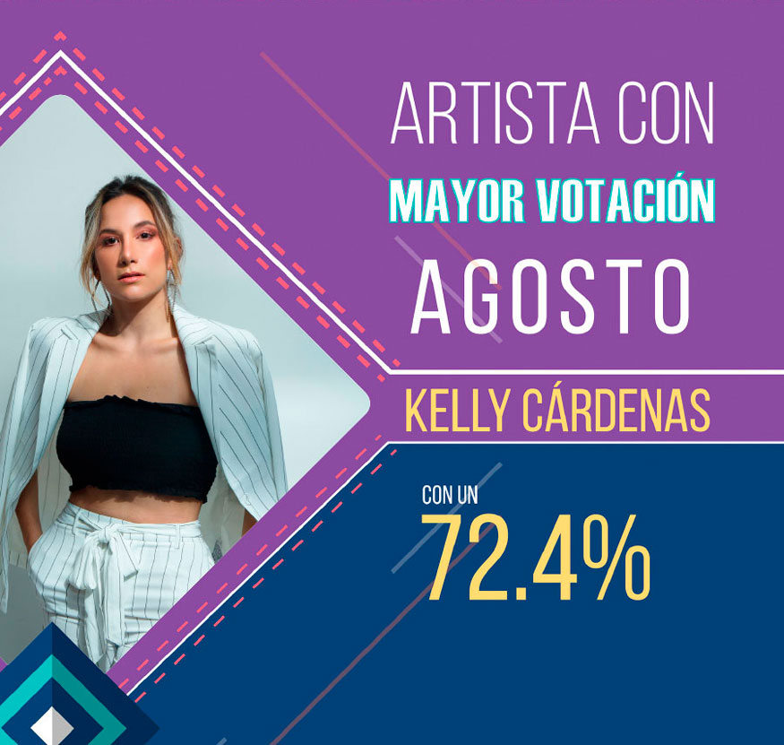
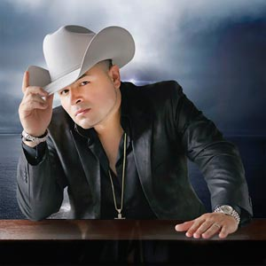

Directorio de Artistas

Alexis Escobar
{kind=link}
Amanda Patricia
{kind=link}
Brayan Fernández
{kind=link}
D-Lord
{kind=link}
Daniel Medicis
{kind=link}
Danny Moreno
 |
Danny Moreno ha revolucionado el Vallenato con su nuevo sencillo musical “Tú y yo”, el cual viene con una gran fusión urbana pero defendiendo sus raíces vallenatas. Junto a su hermano y acordeonero Jorge Moreno nos muestran una bella historia de amor en medio de la guerra en su cinematográfico video musical ya disponible en YouTube y en todas las plataformas digitales junto con una nueva versión junto al rey del despecho urbano Yelsid (Tú y Yo Remix Ft Yelsid). Contacto:Teléfono: 311 8738015 - 311 2464351 Instagram: @DannyMorenoYLa13 Facebook: Danny Moreno YouTube: Danny Moreno & La 13 |
Yiyo Bohórquez
 |
Oriundo de Santa Sofía – Boyacá. Cantante, compositor e intérprete del acordeón; desde muy niño su inclinación por el vallenato ha llegado a miles de seguidores con canciones como “Entrégame tu amor”, ahora presenta su nuevo éxito “El amor de mi vida”. |
Eri Linares
{kind=link}
Fernando Burbano
{kind=link}
Fernando Gil
{kind=link}
Iván Carvajal
{kind=link}
Janfer
 |
Janfer regresa con su “Amor bandido”. La artista revelación de música popular se complace en presentar su más reciente sencillo musical “Amor Bandido”. Luego del éxito obtenido con “Ya eres leyenda”, “El machito”, “Mi peor fracaso-, “Apenas 20”, “Mi verguenza”, y “Lo que calla una mujer”. |
Jhoan Ospina
 |
Jhoan Ospina, artista revelación de la música popular, nos vuelve a sorprender con su nueva producción musical “Que lástima me das”, canción que ya empieza a sonar en el país.
El lanzamiento del video será en unos días para dar de qué hablar por su talento y creatividad al avanzar en este proyecto. |
Juan Carlos Hurtado “El Andariego”
 |
Juan Carlos Hurtado “El Andariego” artista con 27 años de trayectoria y éxitos nacionales como "Amor oculto", "Dos días" y "El amor no tiene edad" entre otros, presenta "Supéralo" su más reciente sencillo promocional. Contacto: |
Juan Carlos Ensamble
 |
Juan Carlos Ensamble, presenta su nuevo sencillo, “Encantadora”. Una propuesta innovadora llena de romance y sabrosura. “Esta es la nueva salsa”. Contacto: |
Key Zanto
{kind=link}
Lady Noriega
 |
Lady Noriega, mujer de éxito, controvertida, sensual y artista en toda la extensión, en sus años de carrera ha marcado líneas difíciles de superar. Hoy vuelve a la escena musical de la mano del productor Hugo Gutiérrez, presentando su nuevo sencillo “Pateaste la lonchera”. |
Los Bacanes del Sur
{kind=link}
Los Inquietos del Vallenato
 |
Los Inquietos del Vallenato con su vocalista principal Joel Atencio y su acordeonista Juanchi Berrocal, siguen marcando historia en el género con sus exitos recientes “Sigo aquí” y “Dónde está el amor” disponibles en YouTube y plataformas digitales. |
Los P–Tres
{kind=link}
Manolo
{kind=link}
Mauricio Ceballos
 |
Mauricio Ceballos, “Puro sentimiento”, inicia este 2018 pisando fuerte con su cuarto sencillo "Estoy mamao", una canción de su autoría y acompañada de su interpretación que les llega a todos. Contacto: |
Miguel Galindo
|  | El artista mexicano Miguel Galindo, presenta su más reciente éxito “Ya no me preguntes”, tema con el que llegó a conquistar a todos los colombianos. Contacto: |
{kind=link}
Olider Montana
{kind=link}
Orlando López
 |
“Sufre corazón”, es el nuevo sencillo de
Orlando López, con el que logró salirse de lo común y mostró en su video una historia diferente. “Sufre corazón”, se está consolidando como un éxito nacional y está punteando los rankings de los medios de comunicación como uno de los mejores del 2018. |
Roberto Antonio
 |
Roberto Antonio, cantante y compositor venezolano, co-fundador y precursor del tecnomerengue, está de regreso en el mercado discográfico para celebrar tres décadas de impecable trayectoria musical. Desde sus enormes hits de los 80', incluyendo “Noches de fantasía” y “Marejada” ha hecho girar el globo entero con sus éxitos, hasta su más reciente sencillo “Estar contigo”. Contacto: |
Víctor Jiménez
 |
Cantautor guanajuatense, luego de su visita por algunas poblaciones de Colombia como Santander, Boyacá y Cundinamarca presenta sus nuevos trabajos discográficos “Mis botas y tus zapatillas” y “Solo soy tu amante”, dos espectaculares canciones en género banda que ya se están abriendo paso en todo el territorio nacional, como éxitos definitivos. Víctor Jiménez se encuentra recorriendo buena parte del país presentando su nuevo CD "Tengo ganas". Contacto: |
Víctor Rodríguez
 |
Víctor Rodríguez, cantante de música popular nacido en Bogotá, da a conocer su tema musical de lanzamiento “No se vaya a casar” con un estilo propio y juvenil enfocado para el público en general, dando así un nuevo concepto en este género con su producción “Lo que no sirve que no estorbe”. Contacto: |